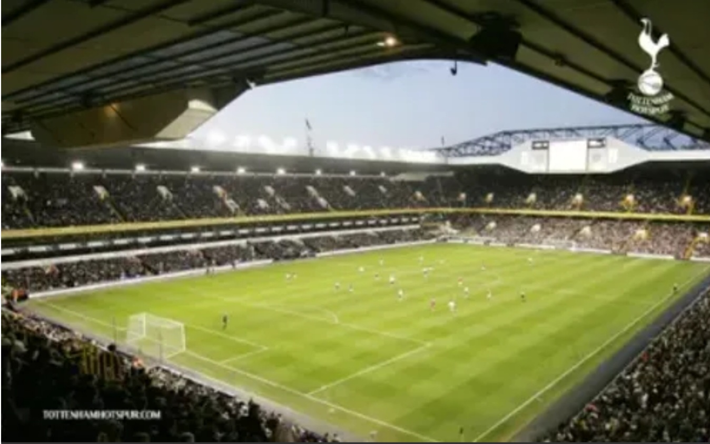
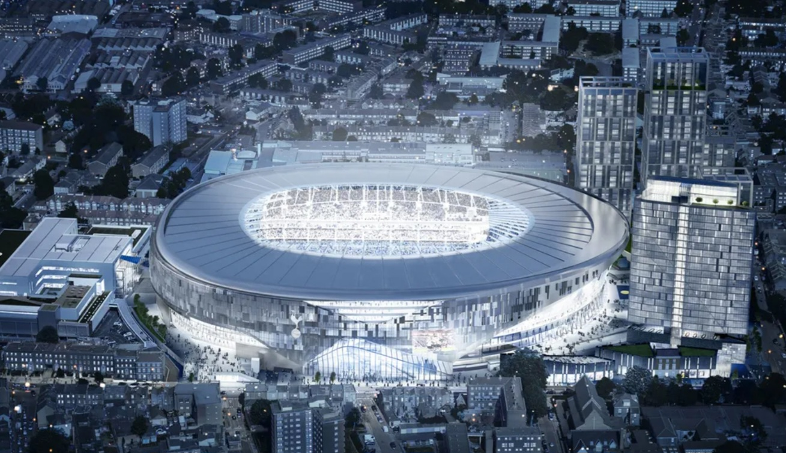
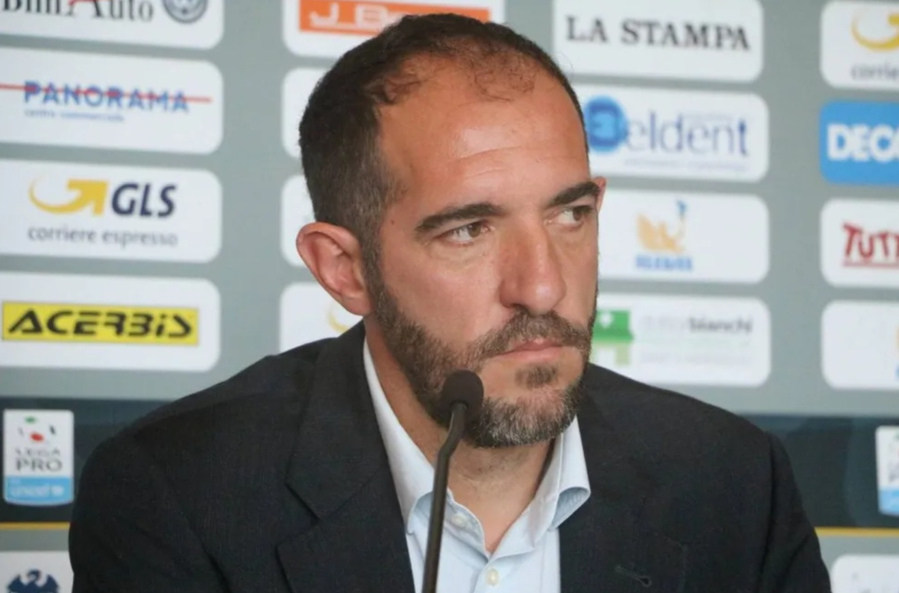
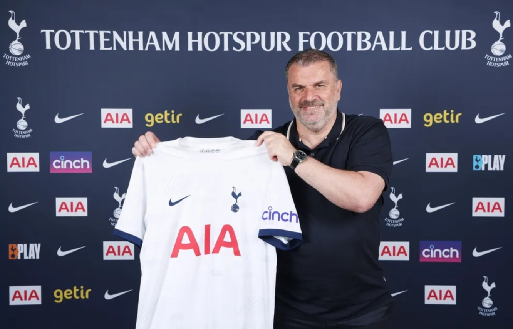

우승기록
프리미어 리그 : 1950-51, 1960-61
EFL 챔피언십 : 1919-20, 1949-50
FA컵 : 1900-01, 1920-21, 1960-61, 1961-62, 1966-67, 1980-81, 1981-82, 1990-91
EFL컵 : 1970-71, 1972-73, 1998-99, 2007-08
FA 커뮤니티 실드 : 1921, 1951, 1962, 1967, 1981, 1991
UEFA 컵위너스컵 : 1962-1963
UEFA 유로파 리그 : 1971-72, 1983-84
홈구장

화이트 하트 레인
개장일: 1899년 9월 4일
폐장일: 2017년 5월 14일
수용인원: 36,284명
위치: 런던 토트넘
건설비용: 10만 파운드
그라운드 크기: 100m x 67m

토트넘 핫스퍼 스타디움
개장일: 2019년 4월 3일
수용인원: 62,850명
위치: 런던 토트넘
건설비용: 10억 파운드
그라운드 크기: 105m x 68m
UEFA 등급: ★★★★
2022-23 시즌 주요 선수 ( 3 - 4 - 3 )
10 Harry Kane
7 Heung-Min Son
21 Dejan Kulusevski
14 Ivan Perisic
5 Pierre-Emile Hojbjerg
30 Rodrigo Bentancur
12 Emerson Royal
34 Clement Lenglet
15 Eric Dier
17 Cristian Romero
1 Hugo Lloris
2022-23 시즌 감독과 전술
안토니오 콘테
대수: 45대
감독 기간: 2021년 11월 2일 ~ 2023년 3월 27일
사용 포메이션: 3 - 4 - 3
장점: 팀 단위 빌드업 전술, 선수 기량 극대화
단점: 유럽 대항전 부진, 비타협적 성격

크리스티안 스텔리니
대수: 46대 (대행)
감독 기간: 2023년 3월 27일 ~ 2023년 4월 24일
사용 포메이션: 3 - 4 - 3
특징: 콘테 부임 당시 수석 코치
라이언 메이슨
대수: 47대 (대행)
감독 기간: 2023년 4월 24일 ~ 2023년 5월 28일
사용 포메이션: 4 - 4 - 2
장점: 짧은 패스 빌드업, 강한 압박 축구
단점: 선발 기용 문제, 선수 교체 타이밍

엔지 포스테코글루
대수: 48대
감독 기간: 2023년 6월 6일 ~
사용 포메이션: 4 - 3 - 3
특징: 후방 빌드업 조직, 공격적인 축구
역사적인 경기

2018-19 UCL 4강
2019년 5월 9일
아약스 vs 토트넘 (3 vs 3)

2018-19 UCL 8강
2019년 4월 18일
맨시티 vs 토트넘 (4 vs 3)